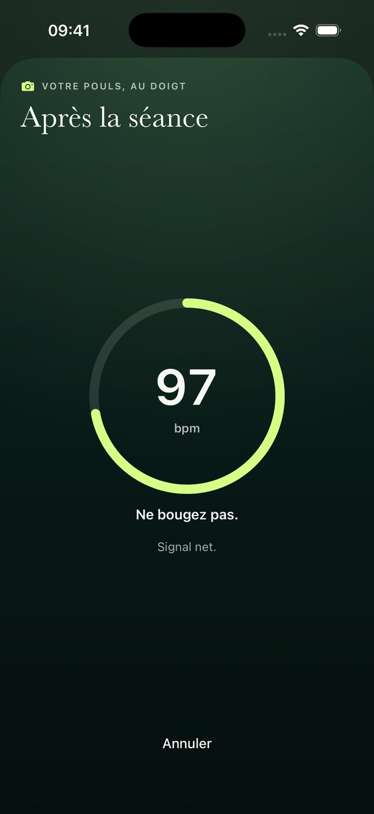
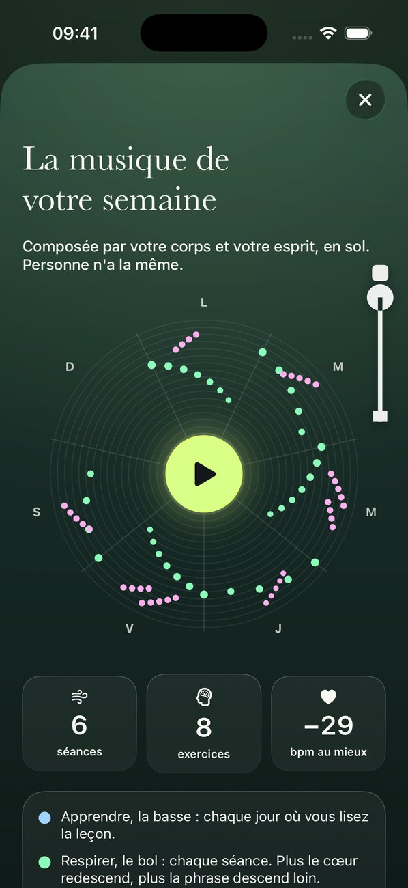

iPhone and iPad · free during the beta


A moment to come back down.
After sport, after the day, before sleep. A voice guides you: the breath slows, the body lets go, the mind settles.
What do you need?
Heart still high after your session? Ninety seconds, standing, to let it come back down.
No card needed · from 90 seconds to a few minutes · the studies we cite
0 0
beats per minute, before and after a session (example)
0
the shortest session, standing, eyes open
0
your finger on the camera, and your pulse appears
0 0
breathe in, then breathe out: six breaths a minute, the pace that slows your heart
Through the day
Several moments, one same gesture.
You stop your watch, close the laptop, turn off the light. Your body keeps going: your heart is still fast, your mind still racing. Replere takes care of those minutes.
Your session companion
Souffle takes after you.
Souffle is Replere's little cloud. She breathes with you during the session and her mood follows your day. She never scolds, and never counts the days you missed.
- Out of breathwhen you arrive, heart still high
- Calmonce your breath has settled
- Proudwhen you keep your rhythm
- Asleepat night, after the last session
New · No watch needed
Your heart rate, measured by the camera.
Place your index finger on the iPhone's rear lens. The flash lights up your finger, and with each heartbeat your blood very slightly changes the color of your skin. Replere reads that rhythm. It's how fingertip pulse oximeters work.
Thirty seconds before the session, thirty seconds after. You see how far your heart rate has come down.
- Before
- 112 bpm
- After
- 97 bpm
- Drop
- −15
Sample measurement. An estimate for comparing before and after, not a medical measurement. A watch or a chest strap is still more accurate, and Replere reads those too. No images are kept.

One session, four steps
Breathe, let go, notice, get going.
- 01BreatheSlow breathing, with the out-breath longer than the in-breath. Your heart rate comes down a notch with each breath.
- 02Let goThe voice guides you to what did the work: your legs after a run, your shoulders after a day at a screen, your whole body in the evening.
- 03NoticeA moment to notice how you feel, recall what felt good in your day, and keep it.
- 04Get goingThe voice brings you back: your feet on the ground, your eyes open, a stretch. You don't end up drowsy; you head into the rest of your day feeling fresh. At night, the session lets you drift towards sleep.

A memory of yourself
Your week, in music.
Each session adds a phrase on the singing bowl, each exercise adds chimes, each lesson a low note. On Sunday, you listen to what your body composed. And once a week, Replere shows you what you wrote down seven days earlier.

A word from the founder
I built Replere because we put so much care into what we do, in training and at work, and so little into the minutes that follow. I wanted an app that looks after the body and the mind, with no ads and no empty promises. If anything bothers you, write to contact@replere.app. I read everything.
Anatole Pitron, founder · contact@replere.app
Before you try
The questions people ask us.
How long is a session?
From ninety seconds to a few minutes. The shortest post-workout session is done standing, eyes open, still sweating.
Does it work without a watch?
Yes. Place your index finger on the rear camera for thirty seconds before the session, then again after. The flash lights up your finger, the app reads your pulse, and you see how far your heart rate has come down. An estimate for comparison, not a medical measurement.
What about a Garmin, an Apple Watch or a chest strap?
Your heart rate shows live during the session. Garmin and chest straps broadcast over Bluetooth, with nothing to install on the watch. Apple Watch goes through the Replere watch app and Apple Health.
Is it free?
During the beta, everything is free, no credit card needed. When it launches on the App Store, sessions will stay free. Replere Plus will add programs and a detailed view of your data, for €5.99 a month or €39.99 a year.
Where does my health data go?
Your sessions and health data stay on your iPhone. The one exception, if you connect Garmin: your workouts pass, encrypted, through a Replere server in France, which deletes them as soon as your iPhone has received them. No ads, no trackers. The privacy policy lists, line by line, what the app reads in Apple Health.
Is it proven?
The tools largely are. In several trials, slow breathing speeds up the return to rest after exercise, and muscle relaxation improves sleep. Sophrology as a discipline has been studied less. The studies and their limits are cited. Replere is not a medical device.
Free during the beta
Try Replere tonight, or after your next workout.
All sessions stay free. When it launches on the App Store, Replere Plus will add programs and a detailed view of your data, for €5.99 a month or €39.99 a year. Your data stays on your iPhone.

On a computer? Scan this code with your iPhone camera.
Replere supports recovery; it is not a medical device. What the research says, with sources.
Photos: Yazid N, Alekon pictures, Daniel Lincoln, Diana Shchurova and Katharina Roehler, on Unsplash.